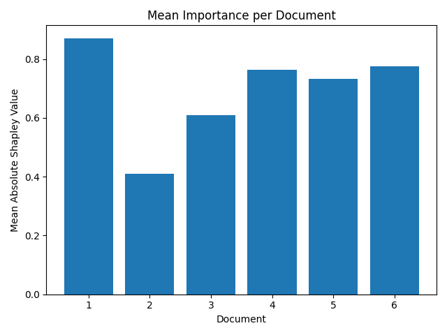
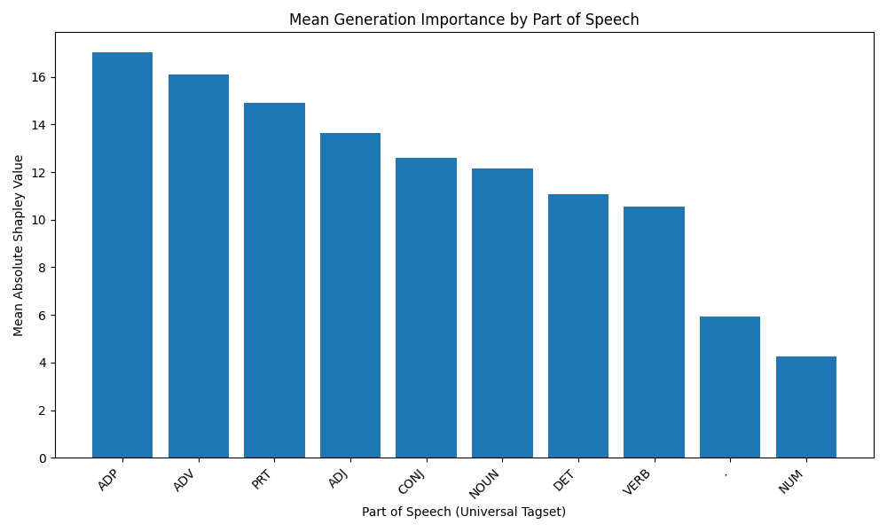
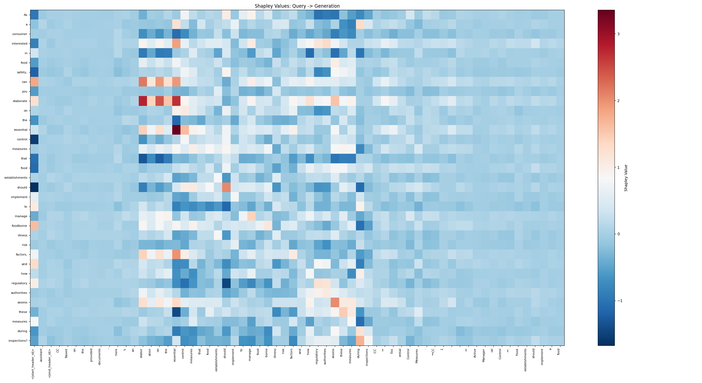
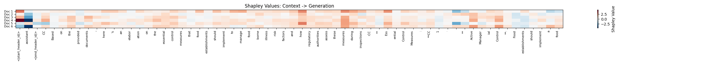

Document Importance

Shows the relative contribution of each retrieved document to the final generated answer for a specific query.
POS Importance

Aggregated Part-of-Speech importance across all generated responses. This reveals which linguistic components (e.g., Nouns, Verbs) the model relies on most heavily to construct its answers.
Query Heatmap

Visualizes the direct influence of input tokens (x-axis) on the generated output (y-axis).
Red = Positive contribution (increases probability of token).
Blue = Negative contribution (decreases probability).
Context Heatmap

Visualizes the direct influence of input tokens (x-axis) on the generated output (y-axis).
Red = Positive contribution (increases probability of token).
Blue = Negative contribution (decreases probability).